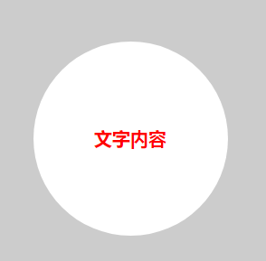

1.标签显示模式
标签显示模式是指标签以什么方式进行显示，比如div 自己占一行， 比如span 一行可以放很多个。
HTML标签一般分为块标签和行内标签两种类型，它们也称块元素和行内元素。
| 元素模式 | 元素排列 | 设置样式 | 默认宽度 | 包含 |
|---|---|---|---|---|
| 块级元素 | 一行只能放一个块级元素 | 可以设置宽度高度 | 容器的100% | 容器级可以包含任何标签 |
| 行内元素 | 一行可以放多个行内元素 | 不可以直接设置宽度高度 | 它本身内容的宽度 | 容纳文本或则其他行内元素 |
| 行内块元素 | 一行放多个行内块元素 | 可以设置宽度和高度 | 它本身内容的宽度 |
1.1 块级元素（block-level）
块级元素特点：
（1）比较霸道，自己独占一行
（2）高度，宽度、外边距以及内边距都可以控制。
（3）宽度默认是容器（父级宽度）的100%
（4）是一个容器及盒子，里面可以放行内或者块级元素。
1
2
/*常见的块元素*/
<h1>~<h6>、<p>、<div>、<ul>、<ol>、<li>
其中：
<p></p>内部不能放块级元素，尤其是不能放divh1,h2,h3,h4,h5,h6,dt内部不能放其他块级元素
1.2 行内元素（inline-level)
行内元素的特点：
（1）相邻行内元素在一行上，一行可以显示多个
（2）高、宽直接设置是无效的
（3）默认宽度就是它本身内容的宽度
（4）行内元素只能容纳文本或则其他行内元素
其中：
链接里面不能再放链接。
特殊情况
a里面可以放块级元素，但是给a转换一下块级模式最安全。
1.3 行内块元素（inline-block）
在行内元素中有几个特殊的标签——<img />、<input />、<td>，可以对它们设置宽高和对齐属性，有些资料可能会称它们为行内块元素。
行内块元素的特点：
（1）和相邻行内元素（行内块）在一行上,但是之间会有空白缝隙。一行可以显示多个 （2）默认宽度就是它本身内容的宽度。 （3）高度，行高、外边距以及内边距都可以控制。
2.盒子模型
所谓盒子模型，就是把HTML页面中的布局元素看作是一个矩形的盒子，也就是一个盛装内容的容器。
盒子模型有元素的内容(content)、边框（border）、内边距（padding）、和外边距（margin）组成。
- 内容区域：盒子里面的文字和图片等元素是
- 边框 ：盒子的厚度
- 内边距：盒子内容与边框的距离（类似单元格的 cellpadding)
- 外边距：盒子与盒子之间的距离（类似单元格的 cellspacing）
2.1 盒子边框（border）
1
2
border : border-width || border-style || border-color
border: 1px solid red; /* 没有顺序 */
| 属性 | 作用 |
|---|---|
| border-width | 定义边框粗细，单位是px |
| border-style | 边框的样式 |
| border-color | 边框颜色 |
- 边框的样式
border-style：- none：没有边框即忽略所有边框的宽度（默认值）
- solid：边框为单实线(最为常用的)
- dashed：边框为虚线
- dotted：边框为点线
当需要单独指定边框的属性时，可以使用下面的属性设定
| 上边框 | 下边框 | 左边框 | 右边框 |
|---|---|---|---|
| border-top-style:样式; | border-bottom-style:样式; | border-left-style:样式; | border-right-style:样式; |
| border-top-width:宽度; | border- bottom-width:宽度; | border-left-width:宽度; | border-right-width:宽度; |
| border-top-color:颜色; | border- bottom-color:颜色; | border-left-color:颜色; | border-right-color:颜色; |
| border-top:宽度 样式 颜色; | border-bottom:宽度 样式 颜色; | border-left:宽度 样式 颜色; | border-right:宽度 样式 颜色; |
2.2 圆角边框
1
2
3
4
5
border-radius:length;
/*
其中每一个值可以为 数值或百分比的形式。
技巧： 让一个正方形 变成圆圈
*/
1
border-radius: 50%;

2.3 表格边框
着重说明表格的边框，实用性很强。在设定两个单元格之间的边框时，会出现重叠，从而使边框变粗，需要通过CSS来解决。
1
2
3
4
5
6
7
/*
- collapse 单词是合并的意思
- border-collapse:collapse; 表示相邻边框合并在一起。
*/
table {
border-collapse:collapse;
}
1
2
3
4
5
6
7
8
9
10
11
12
13
14
<style>
table {
width: 500px;
height: 300px;
border: 1px solid red;
}
td {
border: 1px solid red;
text-align: center;
}
table, td {
border-collapse: collapse; /*合并相邻边框*/
}
</style>
合并前：
合并后：

2.4 内边距（padding）
padding属性用于设置内边距， 指 边框与内容之间的距离。
| 属性 | 作用 |
|---|---|
| padding-left | 左内边距 |
| padding-right | 右内边距 |
| padding-top | 上内边距 |
| padding-bottom | 下内边距 |
特点：
- 内容和边框 有了距离，添加了内边距。
- 盒子会变大了。
| 值的个数 | 表达意思 |
|---|---|
| 1个值 | padding：上下左右内边距; |
| 2个值 | padding: 上下内边距 左右内边距 ； |
| 3个值 | padding：上内边距 左右内边距 下内边距； |
| 4个值 | padding: 上内边距 右内边距 下内边距 左内边距 ；（顺时针） |
盒子宽度
Element Width = content width + padding + border （Width为内容宽度）盒子高度
Element Height = content height + padding + border （Height为内容高度）
盒子的实际的大小 = 内容的宽度和高度 + 内边距 + 边框
这个时候，容易造成问题：内边距的改变使得盒子实际大小被撑开
1
2
3
4
5
6
7
8
9
10
11
12
13
14
15
16
17
18
19
20
21
22
23
24
25
/* 原盒子尺寸
盒子实际尺寸：100px + 0px + 0px = 100px
*/
div{
height:100px;
width:100px;
}
/* 加入内边距
盒子实际尺寸：100px + 20px + 0px =120px
*/
div{
height:100px;
width:100px;
padding:10px;
}
/* 保持盒子大小不变的解决方案
盒子实际尺寸：80px + 20px + 0px =100px
*/
div{
height:80px;
width:80px;
padding:10px;
}
2.5 外边距（margin）
margin属性用于设置外边距。 margin就是控制盒子和盒子之间的距离
| 属性 | 作用 |
|---|---|
| margin-left | 左外边距 |
| margin-right | 右外边距 |
| margin-top | 上外边距 |
| margin-bottom | 下外边距 |
margin值的简写 （复合写法）代表意思 跟 padding 完全相同。
2.6 盒子阴影
1
2
3
4
5
box-shadow:水平阴影 垂直阴影 模糊距离（虚实） 阴影尺寸（影子大小） 阴影颜色 内/外阴影；
/*
前两个属性是必须写的。其余的可以省略。
外阴影 (outset) 是默认的 但是不能写 想要内阴影可以写 inset
*/
1
2
3
4
5
6
7
8
div {
width: 200px;
height: 200px;
border: 10px solid red;
/* box-shadow: 5px 5px 3px 4px rgba(0, 0, 0, .4); */
/* box-shadow:水平位置 垂直位置 模糊距离 阴影尺寸（影子大小） 阴影颜色 内/外阴影； */
box-shadow: 0 15px 30px rgba(0, 0, 0, .4);
}
3.盒子模型操作
3.1 块级盒子水平居中
让一个块级盒子实现水平居中必须：
盒子必须指定了宽度（width）
然后就给左右的外边距都设置为auto
1
2
3
4
5
6
7
8
9
10
11
12
.header {
width: 960px;
margin:0 auto;
}
/* 常见的写法，以下下三种都可以
margin-left: auto; margin-right: auto;
margin: auto;
margin: 0 auto;
*/
3.2 文字居中和盒子居中区别
- 盒子内的文字水平居中是 text-align: center, 而且还可以让 行内元素和行内块居中对齐
- 块级盒子水平居中 左右margin 改为 auto
1
2
text-align: center; /* 文字 行内元素 行内块元素水平居中 */
margin: 10px auto; /* 块级盒子水平居中 左右margin 改为 auto 就阔以了 上下margin都可以 */
3.3 插入图片和背景图片区别
- 插入图片 我们用的最多 比如产品展示类 移动位置只能靠盒模型 padding margin
- 背景图片我们一般用于小图标背景 或者 超大背景图片 背景图片 只能通过 background-position
1
2
3
4
5
6
7
8
9
10
11
12
13
14
img {
width: 200px;/* 插入图片更改大小 width 和 height */
height: 210px;
margin-top: 30px; /* 插入图片更改位置 可以用margin 或padding 盒模型 */
margin-left: 50px; /* 插入当图片也是一个盒子 */
}
div {
width: 400px;
height: 400px;
border: 1px solid purple;
background: #fff url(images/sun.jpg) no-repeat;
background-position: 30px 50px; /* 背景图片更改位置 我用 background-position */
}
3.4 清除元素的默认内外边距 (重要)
为了更灵活方便地控制网页中的元素，制作网页时，我们需要将元素的默认内外边距清除 。
1
2
3
4
5
6
7
* {
padding:0; /* 清除内边距 */
margin:0; /* 清除外边距 */
}
/*
行内元素为了照顾兼容性， 尽量只设置左右内外边距， 不要设置上下内外边距
*/
3.5 外边距合并（重要）
使用margin定义块元素的垂直外边距时，可能会出现外边距的合并。
(1). 相邻块元素垂直外边距的合并
- 当上下相邻的两个块元素相遇时，如果上面的元素有下外边距margin-bottom
- 下面的元素有上外边距margin-top，则他们之间的垂直间距不是margin-bottom与margin-top之和
- 取两个值中的较大者这种现象被称为相邻块元素垂直外边距的合并（也称外边距塌陷）。

解决方案：尽量给只给一个盒子添加margin值
(2). 嵌套块元素垂直外边距的合并（塌陷）
- 对于两个嵌套关系的块元素，如果父元素没有上内边距及边框
- 父元素的上外边距会与子元素的上外边距发生合并
- 合并后的外边距为两者中的较大者

解决方案：
- 可以为父元素定义上边框
- 可以为父元素定义上内边距
- 可以为父元素添加
overflow:hidden
还有其他方法，比如浮动、固定、绝对定位的盒子不会有问题，后面浮动章节见。
3.6 盒子模型布局稳定性
大部分情况下,，内边距、外边距是可以混用的。 即用内边距也可以，用外边距也可以。 你觉得哪个方便，就用哪个。
按照 优先使用 宽度 （width） ，其次 使用内边距（padding） 再次 外边距（margin）。
1
width > padding > margin
- 原因：
- margin 会有外边距合并 还有 ie6下面margin 加倍的bug（讨厌）所以最后使用。
- padding 会影响盒子大小， 需要进行加减计算（麻烦） 其次使用。
- width 没有问题（嗨皮）我们经常使用
宽度剩余法高度剩余法来做。
4.书写规范
CSS中书写规范，是代码起飞的开始。
4.1 空格规范
1
2
3
4
5
6
7
8
9
10
11
12
13
14
15
16
17
18
19
20
21
22
23
24
25
26
27
28
29
30
/* 1. 选择器 与 { 之间必须包含空格 */
.selector {
}
/* 2. 属性名与之后的 : 之间不允许包含空格， : 与 属性值 之间必须包含空格 */
font-size: 12px;
/* 3. 并集选择器，每个选择器声明必须独占一行*/
/* good */
.post,
.page,
.comment {
line-height: 1.5;
}
/* bad */
.post, .page, .comment {
line-height: 1.5;
}
/* 4.一般情况情况下，选择器的嵌套层级应不大于 3 级，位置靠后的限定条件应尽可能精确 */
/* good */
#username input {}
.comment .avatar {}
/* bad */
.page .header .login input {}
.comment div * {}
4.2 属性规范
1
2
3
4
5
6
7
8
9
10
11
12
13
14
15
16
17
18
19
20
21
22
/* 1.属性定义必须另起一行。*/
/* good */
.selector {
margin: 0;
padding: 0;
}
/* bad */
.selector { margin: 0; padding: 0; }
/* 2.属性定义后必须以分号结尾。*/
/* good */
.selector {
margin: 0;
}
/* bad */
.selector {
margin: 0
}